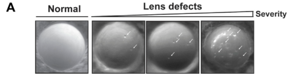

Zebrafish alpha-crystallin B chain b (cryabb, also known as cryab2 or alphaB2-crystallin) is a member of the small heat shock protein (sHSP/HSP20) family. It is one of two zebrafish alphaB-crystallin paralogs arising from the teleost whole-genome duplication. Unlike cryaba which became lens-specific, cryabb retains the broad expression pattern of its mammalian ortholog CRYAB, with constitutive expression in heart, brain, skeletal muscle, liver, and lens (PMID:16420472). cryabb has greater chaperone-like activity than human CRYAB at 25-30 degrees C, while human CRYAB provides greater protection at 35-40 degrees C (PMID:16420472). cryabb maintained the widespread protective role found in mammalian CRYAB after gene duplication, while cryaba adopted a more restricted lens role (PMID:16420472). Morpholino knockdown of cryabb causes skeletal muscle defects, myofibril disassembly, heart failure, and locomotory impairment in zebrafish embryos (PMID:25866181). Loss of cryabb also contributes to maintenance of lens transparency (PMID:38705506), though its primary role appears to be in muscle and stress protection rather than lens structure. The protein belongs to the sHSP/HSP20 family with an alpha-crystallin domain and an N-terminal crystallin domain. UniProt annotates it with keywords for eye lens protein, metal-binding, and zinc.
| GO Term | Evidence | Action | Reason |
|---|---|---|---|
|
GO:0043066
negative regulation of apoptotic process
|
IBA
GO_REF:0000033 |
KEEP AS NON CORE |
Summary: IBA annotation based on phylogenetic inference from mammalian alpha-crystallins (CRYAA, CRYAB, HSPB1) which have documented anti-apoptotic roles. cryabb retains the broad expression pattern and protective functions of mammalian CRYAB (PMID:16420472), making this inference more applicable than for the lens-specific cryaba paralog. However, anti-apoptosis is a downstream biological process rather than a core molecular function.
Reason: Anti-apoptotic activity is a recognized function of the sHSP family and is more relevant for cryabb than cryaba given that cryabb retained the widespread protective role of mammalian CRYAB (PMID:16420472). However, this represents a downstream biological process rather than a core molecular function. Retained as non-core.
|
|
GO:0005737
cytoplasm
|
IBA
GO_REF:0000033 |
ACCEPT |
Summary: IBA annotation for cytoplasmic localization, inferred phylogenetically from multiple sHSP orthologs. Consistent with the known biology of alpha-crystallins as cytoplasmic proteins.
Reason: Cytoplasmic localization is well-established for alpha-crystallins and sHSPs. The IBA inference is phylogenetically sound and consistent with IEA annotations. Falcon deep research independently supports a primary cytosolic site of action.
Supporting Evidence:
file:DANRE/cryabb/cryabb-deep-research-falcon.md
crystallins are described as **soluble cytoplasmic** proteins in vertebrate optical tissues, supporting a primary **intracellular/cytosolic** localization
|
|
GO:0005634
nucleus
|
IBA
GO_REF:0000033 |
KEEP AS NON CORE |
Summary: IBA annotation for nuclear localization based on phylogenetic inference from mammalian sHSPs that translocate to the nucleus under stress conditions. Nuclear localization is not the primary site of action for alpha-crystallins.
Reason: Nuclear localization has been reported for some mammalian sHSP orthologs. The IBA inference is phylogenetically supported but represents a secondary or stress-dependent localization. Retained as non-core.
|
|
GO:0009408
response to heat
|
IBA
GO_REF:0000033 |
ACCEPT |
Summary: IBA annotation for heat stress response, inferred phylogenetically from multiple sHSP orthologs. cryabb belongs to the sHSP/HSP20 family and has robust chaperone-like activity (PMID:16420472), maintaining the widespread protective role of mammalian CRYAB. This is a well-supported annotation.
Reason: cryabb is a member of the sHSP family with demonstrated chaperone-like activity (PMID:16420472). It retained the broad protective function of mammalian CRYAB after gene duplication. Response to heat is a core function for this protein. Falcon deep research adds zebrafish-specific quantitative evidence that cryabb is heat-shock inducible in a stage-dependent manner.
Supporting Evidence:
file:DANRE/cryabb/cryabb-deep-research-falcon.md
heat shock (1 h at 37°C) produced **modest, stage-dependent** changes in cryabb expression
file:DANRE/cryabb/cryabb-deep-research-falcon.md
approximately **2.5-fold at 12 hpf**, **1.7-fold at 24 hpf**, decreased at **48 hpf**, and minimal change by **5 dpf**
|
|
GO:0042026
protein refolding
|
IBA
GO_REF:0000033 |
MODIFY |
Summary: IBA annotation for protein refolding, inferred primarily from Drosophila sHSP orthologs. Alpha-crystallins function as holdases rather than foldases -- they prevent aggregation of denaturing proteins but do not actively refold them. cryabb has robust chaperone-like (holdase) activity at physiological temperatures (PMID:16420472). The protein refolding term is inaccurate for a holdase.
Reason: Alpha-crystallins are holdase chaperones that prevent aggregation of unfolded proteins but do not catalyze refolding. GO:0042026 implies active refolding activity, which is inaccurate for cryabb. GO:0140309 (unfolded protein carrier activity) is not appropriate because it is carrier-specific (per go-ontology#30552). Retain until a holdase chaperone activity NTR is created.
Proposed replacements:
unfolded protein binding (retain until holdase NTR is created)
Supporting Evidence:
PMID:16420472
At 25 degrees C and 30 degrees C, zebrafish alphaB2 showed greater chaperone-like activity than human alphaB-crystallin, and at 35 degrees C and 40 degrees C, the human protein provided greater protection against aggregation.
file:DANRE/cryabb/cryabb-deep-research-falcon.md
the primary function is best described as an **ATP-independent chaperone-like holdase** that maintains proteostasis by suppressing protein aggregation
|
|
GO:0051082
unfolded protein binding
|
IBA
GO_REF:0000033 |
MODIFY |
Summary: IBA annotation for unfolded protein binding based on phylogenetic inference from multiple sHSP orthologs. GO:0051082 is proposed for obsoletion. cryabb has demonstrated chaperone-like activity (PMID:16420472). The holdase function should be captured by GO:0140309.
Reason: GO:0051082 is proposed for obsoletion. The holdase activity of cryabb has been demonstrated by in vitro chaperone assays showing robust prevention of substrate aggregation (PMID:16420472). GO:0140309 (unfolded protein carrier activity) is not appropriate because it is carrier-specific (per go-ontology#30552). Retain until a holdase chaperone activity NTR is created.
Proposed replacements:
unfolded protein binding (retain until holdase NTR is created)
Supporting Evidence:
PMID:16420472
At 25 degrees C and 30 degrees C, zebrafish alphaB2 showed greater chaperone-like activity than human alphaB-crystallin, and at 35 degrees C and 40 degrees C, the human protein provided greater protection against aggregation.
file:DANRE/cryabb/cryabb-deep-research-falcon.md
cryabb is not an enzyme or transporter
file:DANRE/cryabb/cryabb-deep-research-falcon.md
αB-crystallins (including cryabb) are discussed as contributing to **protein quality control** and **cytoskeletal stabilization**
|
|
GO:0005198
structural molecule activity
|
IEA
GO_REF:0000117 |
ACCEPT |
Summary: IEA annotation based on ARBA machine learning models. cryabb has the more specific annotation GO:0005212 (structural constituent of eye lens) from IEA, and its primary molecular function is holdase chaperone activity rather than a generic structural role. However, cryabb does have expression in the lens and the UniProt keyword KW-0273 (Eye lens protein) is annotated.
Reason: While GO:0005198 is general, it is not incorrect -- cryabb contributes to structural integrity in multiple tissues including lens and muscle. The more specific term GO:0005212 is also annotated. Acceptable as an IEA inference.
|
|
GO:0005212
structural constituent of eye lens
|
IEA
GO_REF:0000120 |
KEEP AS NON CORE |
Summary: IEA annotation based on InterPro domain match (IPR003090 Alpha-crystallin_N) and UniProt keyword (KW-0273 Eye lens protein). cryabb is expressed in the lens and contributes to lens transparency (PMID:38705506), though its primary role is in broad tissue protection rather than lens structure.
Reason: cryabb does contribute to lens transparency (PMID:38705506), but unlike cryaba, it retained the broad expression and protective function of mammalian CRYAB (PMID:16420472). The structural lens role is secondary to its widespread chaperone function. Falcon deep research reinforces that cryabb is best annotated as an intracellular stress-response chaperone rather than a structural refractive crystallin, with its early lens contribution being limited and context-dependent. Retained as non-core.
Supporting Evidence:
file:DANRE/cryabb/cryabb-deep-research-falcon.md
cryabb is best annotated as an intracellular, ATP-independent sHSP chaperone supporting proteostasis and stress tolerance rather than a structural refractive crystallin essential for early lens development
file:DANRE/cryabb/cryabb-deep-research-falcon.md
its lens contribution in early development is limited compared with cryaa
|
|
GO:0005737
cytoplasm
|
IEA
GO_REF:0000117 |
ACCEPT |
Summary: IEA annotation for cytoplasmic localization based on ARBA machine learning models. Consistent with the IBA annotation for the same term.
Reason: Cytoplasmic localization is well-established. This IEA annotation is consistent with the IBA annotation. Acceptable as automated confirmation.
|
|
GO:0009892
negative regulation of metabolic process
|
IEA
GO_REF:0000117 |
MARK AS OVER ANNOTATED |
Summary: IEA annotation based on ARBA machine learning models. This is a very broad biological process term. Alpha-crystallins can regulate metabolic processes through their chaperone activity, but GO:0009892 is too general to be informative.
Reason: GO:0009892 (negative regulation of metabolic process) is excessively broad and uninformative. While sHSPs can influence metabolic processes indirectly through their chaperone activity, this IEA annotation does not capture any specific function of cryabb. The annotation likely reflects a generic ARBA prediction from sequence features shared by many proteins.
|
|
GO:0043066
negative regulation of apoptotic process
|
IEA
GO_REF:0000117 |
KEEP AS NON CORE |
Summary: IEA annotation for negative regulation of apoptotic process based on ARBA machine learning models. Consistent with the IBA annotation for the same term and the known anti-apoptotic function of mammalian CRYAB.
Reason: This IEA annotation is consistent with the IBA annotation for the same term. The anti-apoptotic function is well-established for mammalian CRYAB and likely conserved in cryabb. However, this is a downstream biological process rather than a core molecular function. Retained as non-core consistent with the IBA.
|
|
GO:0046872
metal ion binding
|
IEA
GO_REF:0000043 |
MODIFY |
Summary: IEA annotation based on UniProt keyword mapping (KW-0479 Metal-binding). The UniProt entry has keywords for zinc and metal-binding based on ARBA evidence. While the annotation is technically correct, it is very general. The more specific term GO:0008270 (zinc ion binding) would be more informative.
Reason: The annotation is too general. UniProt keywords indicate zinc binding for this protein. A more specific term would be more informative.
Proposed replacements:
zinc ion binding
|
|
GO:0036438
maintenance of lens transparency
|
IMP
PMID:38705506 Loss of αBa-crystallin, but not αA-crystallin, increases age... |
KEEP AS NON CORE |
Summary: IMP annotation for maintenance of lens transparency based on Posner et al. 2024 (PMID:38705506). The study examined individual mutant zebrafish lines for all three alpha-crystallin genes. While the primary finding was that cryaba loss led to the greatest increase in cataract, the study also evaluated cryabb mutants for lens transparency. cryabb contributes to lens maintenance but its primary role is in broad tissue protection.
Reason: The experimental evidence from PMID:38705506 supports a role for cryabb in lens transparency maintenance. However, cryabb's primary function is as a broadly expressed protective chaperone (PMID:16420472), and its lens role is secondary compared to cryaba. Retained as non-core.
Supporting Evidence:
PMID:38705506
zebrafish express one lens-specific alphaA-crystallin gene (cryaa), they express two alphaB-crystallin genes, with one evolving lens specificity (cryaba) and the other retaining the broad expression of its mammalian ortholog (cryabb).
file:DANRE/cryabb/cryabb-deep-research-falcon.md
about **~30%** of cryabb−/− embryos having lens defects at **4 dpf**
file:DANRE/cryabb/cryabb-deep-research-falcon.md
This should be reflected in annotation as “context-dependent lens clarity support,” not as an absolute developmental requirement
|
|
GO:0007519
skeletal muscle tissue development
|
IMP
PMID:25866181 In vivo characterization of human myofibrillar myopathy gene... |
ACCEPT |
Summary: IMP annotation for skeletal muscle tissue development based on Buhrdel et al. 2015 (PMID:25866181). Morpholino knockdown of MFM disease genes including cryabb led to compromised skeletal muscle function due to myofibrillar degeneration. This is more relevant for cryabb than cryaba because cryabb retains the broad muscle expression of mammalian CRYAB (PMID:16420472).
Reason: cryabb retains the widespread expression including muscle tissue that is characteristic of mammalian CRYAB (PMID:16420472). The morpholino knockdown evidence (PMID:25866181) supports a direct role in skeletal muscle tissue development/maintenance. This is a core function for cryabb.
Supporting Evidence:
PMID:25866181
targeted ablation of MFM genes in zebrafish led to compromised skeletal muscle function mostly due to myofibrillar degeneration as well as severe heart failure.
file:DANRE/cryabb/cryabb-deep-research-falcon.md
cryabb (αBb) is described as more widely expressed than cryaba, including **lens, muscle, and brain**
|
|
GO:0007626
locomotory behavior
|
IMP
PMID:25866181 In vivo characterization of human myofibrillar myopathy gene... |
KEEP AS NON CORE |
Summary: IMP annotation for locomotory behavior based on Buhrdel et al. 2015 (PMID:25866181). Morpholino knockdown of cryabb led to compromised skeletal muscle function affecting locomotion.
Reason: The locomotory behavior phenotype from cryabb knockdown (PMID:25866181) is a downstream consequence of myofibrillar degeneration rather than a direct role in locomotion. Retained as non-core.
|
|
GO:0030239
myofibril assembly
|
IMP
PMID:25866181 In vivo characterization of human myofibrillar myopathy gene... |
ACCEPT |
Summary: IMP annotation for myofibril assembly based on Buhrdel et al. 2015 (PMID:25866181). Morpholino knockdown of cryabb led to myofibrillar degeneration. This is consistent with the known role of mammalian CRYAB in maintaining myofibrillar integrity, and cryabb retains the broad muscle expression of its mammalian ortholog (PMID:16420472).
Reason: cryabb retains the broad muscle expression of mammalian CRYAB (PMID:16420472) and morpholino knockdown causes myofibrillar degeneration (PMID:25866181). Myofibril assembly/maintenance is a core function for cryabb, consistent with the known role of mammalian CRYAB as a major myofibrillar myopathy gene.
|
|
GO:0060047
heart contraction
|
IMP
PMID:25866181 In vivo characterization of human myofibrillar myopathy gene... |
ACCEPT |
Summary: IMP annotation for heart contraction based on Buhrdel et al. 2015 (PMID:25866181). Morpholino knockdown of MFM genes including cryabb led to severe heart failure. cryabb retains the cardiac expression of mammalian CRYAB (PMID:16420472).
Reason: cryabb retains the broad expression including heart tissue characteristic of mammalian CRYAB (PMID:16420472). The heart failure phenotype from knockdown (PMID:25866181) supports a direct role in cardiac function. This is a core function for cryabb, consistent with human CRYAB being a cardiomyopathy gene. Falcon deep research adds independent zebrafish evidence linking alphaB-crystallin loss to an embryonic cardiac edema phenotype.
Supporting Evidence:
file:DANRE/cryabb/cryabb-deep-research-falcon.md
The study reports an embryonic **cardiac edema phenotype** characteristic of αB-crystallin knockout lines
|
|
GO:0051082
unfolded protein binding
|
IDA
PMID:16420472 Gene duplication and separation of functions in alphaB-cryst... |
MODIFY |
Summary: IDA annotation based on Smith et al. 2006 (PMID:16420472), which characterized the chaperone-like activity of alphaB2-crystallin (cryabb). The study measured the ability of recombinant cryabb to prevent chemically induced aggregation of alpha-lactalbumin and lysozyme at temperatures from 25 to 40 degrees C. cryabb showed greater chaperone-like activity than human CRYAB at 25-30 degrees C. GO:0051082 is proposed for obsoletion; the holdase function should be captured by GO:0140309.
Reason: GO:0051082 is proposed for obsoletion. The chaperone-like activity assays in PMID:16420472 directly demonstrate holdase function for cryabb -- prevention of chemically induced aggregation of substrate proteins. GO:0140309 (unfolded protein carrier activity) is the recommended replacement term.
Proposed replacements:
unfolded protein binding (retain until holdase NTR is created)
Supporting Evidence:
PMID:16420472
At 25 degrees C and 30 degrees C, zebrafish alphaB2 showed greater chaperone-like activity than human alphaB-crystallin, and at 35 degrees C and 40 degrees C, the human protein provided greater protection against aggregation.
PMID:16420472
zebrafish alphaB2 maintained the widespread protective role also found in mammalian alphaB-crystallin, while zebrafish alphaB1 adopted a more restricted, nonchaperone role in the lens.
file:DANRE/cryabb/cryabb-deep-research-falcon.md
an **ATP-independent molecular chaperone (“holdase”)** supporting **proteostasis** by suppressing aggregation of destabilized proteins
|
|
GO:0005575
cellular_component
|
ND
GO_REF:0000015 |
ACCEPT |
Summary: ND (no data) annotation indicating that no specific cellular component has been experimentally determined for cryabb. This is a placeholder annotation. However, IBA evidence supports cytoplasmic and nuclear localization, and IEA evidence supports cytoplasmic localization.
Reason: ND annotations are standard placeholders indicating no experimental data is available for a particular aspect. While there are IBA and IEA annotations for specific compartments, no direct experimental localization data exists for cryabb. This ND annotation is valid as a factual statement.
|
The research report should be a detailed narrative explaining the function, biological processes, and localization of the gene product. Citations should be given for all claims.
You should prioritize authoritative reviews and primary scientific literature when conducting research. You can supplement
this with annotations you find in gene/protein databases, but these can be outdated or inaccurate.
We are specifically interested in the primary function of the gene - for enzymes, what reaction is catalyzed, and what is the substrate specificity? For transporters, what is the substrate? For structural proteins or adapters, what is the broader structural role? For signaling molecules, what is the role in the pathway.
We are interested in where in or outside the cell the gene product carries out its function.
We are also interested in the signaling or biochemical pathways in which the gene functions. We are less interested in broad pleiotropic effects, except where these elucidate the precise role.
Include evidence where possible. We are interested in both experimental evidence as well as inference from structure, evolution, or bioinformatic analysis. Precise studies should be prioritized over high-throughput, where available.
cryabb encodes the zebrafish αBb-crystallin, a member of the small heat shock protein (sHSP / α-crystallin/HSP20-like) family that acts primarily as an ATP-independent molecular chaperone (“holdase”) supporting proteostasis by suppressing aggregation of destabilized proteins. In zebrafish, αB-crystallin exists as two paralogs (cryaba and cryabb) generated by teleost duplication; the evidence indicates cryabb (αBb) is the more broadly expressed and stress-responsive paralog, with transcriptional coupling to the oxidative-stress regulator Nrf2, and context-dependent roles in lens and heart phenotypes. Quantitative zebrafish data show developmental expression of cryabb rising toward larval stages, modest heat-shock inducibility depending on stage, and oxidative/Nrf2-linked upregulation; cryabb loss-of-function has been reported to cause lens opacity defects in a subset of larvae (~30% at 4 dpf) in one study but minimal early lens defects in another, highlighting background/assay dependence. (park2023interplaybetweennrf2 pages 2-3, elicker2007genomewideanalysisand pages 6-8, park2023interplaybetweennrf2 pages 3-4, posner2021effectsofαcrystallin pages 1-3, posner2021effectsofαcrystallin pages 10-12)
Zebrafish has two αB-crystallin paralogs: cryaba (αBa) and cryabb (αBb); older/alternate gene naming in zebrafish literature and genome-wide sHSP annotations also map these to hspb5a (cryaba) and hspb5b (cryabb). (park2023interplaybetweennrf2 pages 2-3, elicker2007genomewideanalysisand pages 2-3)
Direct experimental validation that the literature is addressing the intended gene comes from CRISPR work that targeted cryabb (ZDB-GENE-040718-419) and confirmed loss of the corresponding αBb protein in adult lenses by targeted mass spectrometry using cryabb-specific tryptic peptides. (posner2021effectsofαcrystallin pages 15-18, posner2021effectsofαcrystallin pages 18-22)
α-crystallins are small heat shock proteins that bind destabilized proteins and inhibit their aggregation, supporting long-lived proteomes such as those in the vertebrate lens. (posner2021effectsofαcrystallin pages 1-3)
Crystallins are described as small, soluble proteins found at high abundance in the cytoplasm of cells in optical tissues, supporting a primary intracellular/cytosolic site of action. (inyushin2019tissuetransparencyin pages 4-6)
Across zebrafish studies, αB-crystallins (including cryabb) are discussed as contributing to protein quality control and cytoskeletal stabilization, consistent with canonical sHSP roles in binding partially unfolded clients and buffering proteotoxic stress. (park2023interplaybetweennrf2 pages 2-3, posner2021effectsofαcrystallin pages 1-3)
cryabb is not an enzyme or transporter; no catalytic reaction or transported substrate is implied by the evidence. Instead, the primary function is best described as an ATP-independent chaperone-like holdase that maintains proteostasis by suppressing protein aggregation. (posner2021effectsofαcrystallin pages 1-3, park2023interplaybetweennrf2 pages 2-3)
A genome-wide zebrafish sHSP expression analysis quantified hspb5b/cryabb by qRT-PCR across development (reported as fraction of EF-1α ×10^5). cryabb expression was very low at the 16-cell stage and increased by larval stages: 0.1±0.1 (16-cell), 2.9±1.0 (12 hpf), 2.6±1.7 (24 hpf), 12.4±10.8 (48 hpf), 18.0±1.9 (5 dpf). (elicker2007genomewideanalysisand pages 6-8)
In the same study, heat shock (1 h at 37°C) produced modest, stage-dependent changes in cryabb expression: approximately 2.5-fold at 12 hpf, 1.7-fold at 24 hpf, decreased at 48 hpf, and minimal change by 5 dpf. (elicker2007genomewideanalysisand pages 6-8)
In zebrafish, αB-crystallin is reported as detected in multiple tissues including heart, brain, skeletal muscle, kidneys, and even discussed in relation to the extracellular matrix (ECM), while cryabb (αBb) is described as more widely expressed than cryaba, including lens, muscle, and brain. (park2023interplaybetweennrf2 pages 2-3)
A tissue-transparency review, citing zebrafish resources, states that in embryos Cryaa is lens-restricted whereas Cryabb is distributed throughout the body, aligning with cryabb being a broadly expressed stress-linked sHSP rather than a lens-exclusive crystallin. (inyushin2019tissuetransparencyin pages 4-6)
Direct zebrafish cryabb subcellular localization experiments were not present in the extracted evidence. However, crystallins are described as soluble cytoplasmic proteins in vertebrate optical tissues, supporting a primary intracellular/cytosolic localization. (inyushin2019tissuetransparencyin pages 4-6)
Mentions of αB-crystallin in the “extracellular matrix” in zebrafish context should be interpreted cautiously as tissue/compartment association rather than proof that cryabb is a secreted ECM structural protein. (park2023interplaybetweennrf2 pages 2-3)
A 2023 zebrafish study using nrf2 mutant backgrounds reports a tissue-specific transcriptional relationship where cryabb transcripts increase strongly in heart and brain upon Nrf2 compromise, while cryaba does not show comparable changes. (park2023interplaybetweennrf2 pages 3-4, park2023interplaybetweennrf2 pages 2-3)
Oxidative stress induction with 800 μM tert-butyl hydroperoxide (tBHP) for 2 h at 4 dpf increased cryabb mRNA by about ~1.5-fold. (park2023interplaybetweennrf2 pages 3-4)
Two independent zebrafish CRISPR-based efforts converge on validated cryabb loss-of-function but report different early lens outcomes.
Posner et al. 2021 (bioRxiv; posted Dec 2021; URL https://doi.org/10.1101/2021.12.22.473921): generated cryabb null lines and validated loss of αBb protein by targeted MS. In larval analyses (3–4 dpf), they report that cryabb null mutants did not show significant lens defects, consistent with low early lens expression; they also report no evidence for genetic compensation among cryaa/cryaba/cryabb transcripts. (posner2021effectsofαcrystallin pages 1-3, posner2021effectsofαcrystallin pages 18-22)
Park et al. 2023 (Frontiers Mol Biosci; published Jul 2023; URL https://doi.org/10.3389/fmolb.2023.1185704): reported lens opacity defects in cryabb−/− embryos characterized by puncta and altered light scattering, with about ~30% of cryabb−/− embryos having lens defects at 4 dpf (compared with ~10% WT in their scoring). (park2023interplaybetweennrf2 pages 3-4)
These discrepancies underscore that cryabb’s contribution to early lens transparency may be context-dependent (e.g., genetic background, scoring methods, environmental stressors), while remaining consistent with a stress-buffering proteostasis function. (posner2021effectsofαcrystallin pages 10-12, park2023interplaybetweennrf2 pages 3-4)
Park et al. (2023) further link αB-crystallin biology to cardiac stress phenotypes and pathways through combinatorial genetics with nrf2. The study reports an embryonic cardiac edema phenotype characteristic of αB-crystallin knockout lines and that Nrf2 loss modulates penetrance in a paralog-dependent manner (stronger interaction with cryaba than cryabb). (park2023interplaybetweennrf2 pages 6-9, park2023interplaybetweennrf2 pages 9-10)
RNA-seq pathway-level findings from heart tissue in Park et al. (2023) include enrichment of GO terms related to extracellular region, supermolecular fiber, and bicellular tight junctions, with upregulation of multiple ECM/remodeling and tight-junction transcripts, and Disease Ontology links toward cardiomyopathy-related signatures. (park2023interplaybetweennrf2 pages 6-9, park2023interplaybetweennrf2 pages 9-10)
The 2023 zebrafish study frames cryabb at the intersection of oxidative-stress response (Nrf2) and proteostatic stress response (sHSP chaperones), supporting a model where cryabb is transcriptionally mobilized in tissues (notably heart/brain) to buffer proteotoxic consequences of impaired redox control. (park2023interplaybetweennrf2 pages 2-3, park2023interplaybetweennrf2 pages 3-4)
In the lens, Park et al. report that phenotypic rescue in an αBa/Nrf2 combined genotype was associated with upregulation of the cholesterol biosynthesis pathway, with pharmacologic perturbation by statins increasing penetrance of lens defects in that genetic background. While this is not cryabb-only, it is relevant to interpreting αB-crystallin paralog biology in lens proteostasis networks. (park2023interplaybetweennrf2 pages 9-10, park2023interplaybetweennrf2 pages 6-9)
Park et al. 2023 is a key recent zebrafish contribution because it explicitly distinguishes cryabb from cryaba and connects cryabb to oxidative-stress signaling via Nrf2, reports oxidative induction (~1.5-fold with tBHP), and provides quantitative penetrance (~30% lens defects at 4 dpf) under their assay. (park2023interplaybetweennrf2 pages 3-4)
Although not zebrafish-specific, recent mammalian/cell-model literature provides mechanistic context likely relevant to cryabb due to strong family conservation.
Extracellular vesicle (EV) / secretory proteostasis signature in stressed cardiomyocytes (Jan 2023): Single-cell transcriptomics and EV proteomics in mouse remodeling models show EV secretion enriched for protein-quality-control components, including CRYAB, and stress-associated redistribution of CRYAB (perinuclear accumulation) in Wnt-activated human iPSC-cardiomyocytes. This supports the idea that αB-crystallin family proteins can be tied to EV-mediated proteostasis signaling under stress (context for interpreting tissue-level “ECM/extracellular” mentions). (schoger2023singlecelltranscriptomicsreveal pages 1-2, schoger2023singlecelltranscriptomicsreveal pages 8-9)
CRYAB as an angiogenic factor from mature hiPSC-derived cardiomyocytes (Sep 2023): Mature (D56) vs less mature (D28) hiPSC-cardiomyocytes displayed increased angiogenic programs, with CRYAB identified as a key upregulated factor. CRYAB knockdown inhibited endothelial migration in vitro; CRYAB overexpression enhanced angiogenesis in transplanted grafts (n=4 per group) and CRYAB was detected at slightly higher concentration in exosomes from mature cardiomyocyte culture supernatants. This provides a real-world implementation angle: CRYAB levels and localization can be leveraged as functional markers and potentially therapeutic effectors in regenerative/cardiovascular contexts (inference for cryabb’s broader tissue roles). (tanaka2023maturehumaninduced pages 15-17)
Condensate/phase-separation and phosphorylation mechanisms (2024; dissertation evidence): Work summarized in a 2024 dissertation reports that CRYAB can undergo phase separation, and that phosphorylation at serine 59 modulates condensate properties and proteostasis outcomes in cardiac contexts, with genetic manipulations (S59A vs S59D) affecting remodeling after myocardial infarction in mice. While not peer-reviewed primary evidence in the extracted set, it reflects a major mechanistic direction (condensatopathy) that may inform hypotheses for cryabb stress responses. (islam2024αbcrystallinphosphorylationinduces pages 155-158)
Genetic dissection of lens proteostasis and cataract mechanisms: Zebrafish cryabb knockouts and paralog comparisons provide a tractable system for parsing how duplicated αB-crystallins partition lens vs systemic stress functions, especially when combined with oxidative-stress pathway mutations (e.g., nrf2). (park2023interplaybetweennrf2 pages 2-3, park2023interplaybetweennrf2 pages 3-4)
Stress biology in heart and brain: The strong cryabb transcriptional induction in Nrf2-deficient hearts/brains suggests cryabb can function as a readout and modifier of proteostatic stress under impaired antioxidant responses. (park2023interplaybetweennrf2 pages 3-4)
Cardiac remodeling biomarkers and EV biology: Packaging of CRYAB with proteostasis factors into EVs during remodeling suggests potential diagnostic/prognostic markers of early stress adaptation. (schoger2023singlecelltranscriptomicsreveal pages 1-2, schoger2023singlecelltranscriptomicsreveal pages 9-10)
Regenerative medicine (angiogenesis support): CRYAB overexpression in cardiomyocyte grafts to improve angiogenesis is an example of direct “implementation” (gene delivery/overexpression strategy), supporting the view of αB-crystallin family proteins as stress-protective effectors. (tanaka2023maturehumaninduced pages 15-17)
Primary functional role: cryabb is best annotated as an intracellular, ATP-independent sHSP chaperone supporting proteostasis and stress tolerance rather than a structural refractive crystallin essential for early lens development. This is supported by broad embryonic distribution, stress inducibility, Nrf2-linked upregulation, and context-dependent lens phenotype penetrance. (inyushin2019tissuetransparencyin pages 4-6, elicker2007genomewideanalysisand pages 6-8, park2023interplaybetweennrf2 pages 3-4, posner2021effectsofαcrystallin pages 1-3)
Paralog specialization after duplication: zebrafish cryaba and cryabb show partitioning of function/expression, with cryaba more lens-enriched and cryabb broader and more stress-linked, making zebrafish a useful evolutionary model for how a single mammalian CRYAB function may be distributed across paralogs. (park2023interplaybetweennrf2 pages 2-3, elicker2007genomewideanalysisand pages 2-3)
Why phenotypes differ across studies: The divergence between minimal early lens phenotypes (Posner 2021) and measurable penetrance (Park 2023) is consistent with a stress-buffering factor whose phenotype depends on background load of proteostatic/oxidative stress and assay sensitivity. This should be reflected in annotation as “context-dependent lens clarity support,” not as an absolute developmental requirement. (posner2021effectsofαcrystallin pages 10-12, park2023interplaybetweennrf2 pages 3-4)
Representative lens opacity phenotypes and quantification of lens defect percentages for cryabb−/− and related genotypes are shown in the Park et al. 2023 figure panels retrieved here. (park2023interplaybetweennrf2 media 2106e8d5, park2023interplaybetweennrf2 media 91f0576d, park2023interplaybetweennrf2 media ccabb86b, park2023interplaybetweennrf2 media 2754785f, park2023interplaybetweennrf2 media 1b5d88a5)
| Aspect | Zebrafish cryabb summary | Evidence / key citations |
|---|---|---|
| Identifiers / orthology | Target verified: zebrafish cryabb encodes αBb-crystallin, one of two zebrafish αB-crystallin paralogs produced by teleost duplication; the other paralog is cryaba (αBa). Older nomenclature/maps also annotate these as hspb5b = cryabb and hspb5a = cryaba. Experimental CRISPR work specifically targeted cryabb / ZDB-GENE-040718-419 and confirmed loss of the αBb protein by targeted mass spectrometry. | Posner 2021 bioRxiv, https://doi.org/10.1101/2021.12.22.473921 (posner2021effectsofαcrystallin pages 15-18, posner2021effectsofαcrystallin pages 18-22, posner2021effectsofαcrystallin pages 1-3); Park 2023, https://doi.org/10.3389/fmolb.2023.1185704 (park2023interplaybetweennrf2 pages 2-3); Elicker & Hutson 2007, https://doi.org/10.1016/j.gene.2007.08.003 (elicker2007genomewideanalysisand pages 2-3) |
| Protein family / domains | Belongs to the small heat shock protein / α-crystallin (HSPB5-like) family. Sequence/phylogenetic analyses in zebrafish specifically grouped hspb5b/cryabb with αB-crystallins. Direct domain boundaries were not provided in the extracted papers, but the family assignment is consistent with the UniProt annotation that this protein contains the α-crystallin / HSP20-like chaperone domain. | Elicker & Hutson 2007, https://doi.org/10.1016/j.gene.2007.08.003 (elicker2007genomewideanalysisand pages 2-3); family-level confirmation in Park 2023 (park2023interplaybetweennrf2 pages 2-3) |
| Molecular function | Best-supported primary function: ATP-independent small heat shock protein chaperone (“holdase”) that binds destabilized proteins and helps suppress aggregation; this is the canonical α-crystallin role and is explicitly described for zebrafish α-crystallins. In zebrafish, αB-crystallins are linked to protein quality control and cytoskeletal stabilization. Paralog-specific note: cryabb is broader-tissue and stress-linked; a review cited in the evidence notes cryabb may show greater chaperone activity than cryaba, but this should be treated cautiously as summary/review-level evidence rather than direct mechanistic proof for this exact UniProt entry. | Posner 2021 bioRxiv, https://doi.org/10.1101/2021.12.22.473921 (posner2021effectsofαcrystallin pages 1-3); Park 2023, https://doi.org/10.3389/fmolb.2023.1185704 (park2023interplaybetweennrf2 pages 2-3); Rossen et al. 2025 review, https://doi.org/10.3389/fcell.2025.1552988 (rossen2025zebrafishasa pages 3-4) |
| Key clients / biological roles | No zebrafish paper in the extracted evidence identified a specific direct client protein for cryabb. Supported roles are broader: maintenance of proteostasis, prevention of protein aggregation, and support of lens clarity and cardiac stress resistance. Inference from mammalian CRYAB literature: αB-crystallin often buffers aggregation-prone cytoskeletal proteins such as desmin and other stressed client proteins; this is useful context but should not be over-interpreted as direct zebrafish cryabb-specific client validation here. | Direct zebrafish roles: Park 2023 (park2023interplaybetweennrf2 pages 3-4, park2023interplaybetweennrf2 pages 6-9, park2023interplaybetweennrf2 pages 9-10); broader CRYAB context in Rossen 2025 (rossen2025zebrafishasa pages 2-3) |
| Localization / tissues | Crystallins are described as highly abundant soluble cytoplasmic proteins in vertebrate optical tissues; for zebrafish, cryabb is reported as broadly expressed in embryos and across tissues including lens, muscle, brain, heart, with adult/tissue-level evidence also mentioning skeletal muscle, kidneys, and extracellular matrix for αB-crystallin family distribution. The extracted zebrafish evidence supports cytosolic/soluble localization and tissue association; explicit secretion data for cryabb were not found. ECM mention in the zebrafish paper is tissue-level association, not proof that cryabb itself is a secreted ECM protein. | Inyushin et al. 2019, https://doi.org/10.3390/molecules24132388 (inyushin2019tissuetransparencyin pages 4-6); Park 2023, https://doi.org/10.3389/fmolb.2023.1185704 (park2023interplaybetweennrf2 pages 2-3); Rossen 2025 review (rossen2025zebrafishasa pages 3-4) |
| Developmental / tissue expression | qRT-PCR in zebrafish showed hspb5b/cryabb expression is very low at the 16-cell stage, rises by 12 hpf, remains similar at 24 hpf, increases further by 48 hpf, and peaks by 5 dpf. Reported values (fraction of EF-1α ×10^5): 0.1±0.1 (16-cell), 2.9±1.0 (12 hpf), 2.6±1.7 (24 hpf), 12.4±10.8 (48 hpf), 18.0±1.9 (5 dpf). One review summarized cryabb as predominantly non-ocular during embryonic/early larval stages, highlighting that its lens contribution in early development is limited compared with cryaa. | Elicker & Hutson 2007, https://doi.org/10.1016/j.gene.2007.08.003 (elicker2007genomewideanalysisand pages 6-8); Rossen 2025 review (rossen2025zebrafishasa pages 3-4) |
| Stress regulation: heat shock / oxidative stress / Nrf2 | cryabb is stress responsive. Heat shock in zebrafish embryos (1 h at 37°C) caused stage-dependent changes in hspb5b/cryabb: about ~2.5-fold at 12 hpf, ~1.7-fold at 24 hpf, reduced at 48 hpf (~0.2-fold), and little change by 5 dpf (~1.2-fold). Oxidative stress with 800 μM tBHP for 2 h at 4 dpf increased cryabb mRNA by ~1.5-fold. Nrf2 loss strongly increased cryabb transcripts in a tissue-specific manner, especially in heart and brain; cryaba did not show the same response. | Elicker & Hutson 2007, https://doi.org/10.1016/j.gene.2007.08.003 (elicker2007genomewideanalysisand pages 6-8); Park 2023, https://doi.org/10.3389/fmolb.2023.1185704 (park2023interplaybetweennrf2 pages 3-4) |
| Zebrafish knockout phenotypes | Evidence is mixed across studies. Posner et al. 2021 reported that cryabb null zebrafish had no substantial early lens defects and only at most slight peripheral fiber-cell abnormalities, consistent with very low early lens expression. In contrast, Park et al. 2023 reported ~30% lens-abnormality penetrance at 4 dpf in cryabb−/− embryos (vs ~10% WT, ~20% nrf2 mutants, ~50% cryaba−/− in that study). For cardiac phenotype, Park et al. report that αB-crystallin loss is associated with embryonic cardiac edema, but the nrf2 interaction was stronger for cryaba; in cryabb−/−; nrf2−/− embryos the cardiac-edema distribution was described as blunted / closer to WT, supporting a stress-response role for cryabb rather than a strong basal structural requirement. | Posner 2021 bioRxiv, https://doi.org/10.1101/2021.12.22.473921 (posner2021effectsofαcrystallin pages 1-3, posner2021effectsofαcrystallin pages 18-22, posner2021effectsofαcrystallin pages 10-12); Park 2023, https://doi.org/10.3389/fmolb.2023.1185704 (park2023interplaybetweennrf2 pages 3-4, park2023interplaybetweennrf2 pages 6-9, park2023interplaybetweennrf2 pages 9-10) |
| Pathways highlighted by transcriptomics | The strongest transcriptomic pathway evidence in the extracted zebrafish literature comes from Park 2023. In lens, phenotypic rescue in cryaba−/−; nrf2−/− was associated with upregulation of cholesterol biosynthesis. In heart, the combined genotype highlighted pathways/GO terms related to extracellular region, supermolecular fiber, and bicellular tight junctions, with multiple ECM/remodeling and junction genes upregulated. These data are not cryabb-only pathway maps, but they place zebrafish αB-crystallin biology at the intersection of proteostasis, oxidative stress signaling, and tissue remodeling. | Park 2023, https://doi.org/10.3389/fmolb.2023.1185704 (park2023interplaybetweennrf2 pages 6-9, park2023interplaybetweennrf2 pages 9-10) |
| Recent developments / current understanding | Recent zebrafish work emphasizes that cryabb is the broader, stress-inducible αB-crystallin paralog, with transcriptional coupling to Nrf2 and context-dependent roles in lens proteostasis and cardiac stress adaptation. More recent reviews of zebrafish cataract models also place cryabb among duplicated zebrafish αB-crystallins useful for dissecting tissue specialization after teleost genome duplication. | Park 2023, https://doi.org/10.3389/fmolb.2023.1185704 (park2023interplaybetweennrf2 pages 2-3, park2023interplaybetweennrf2 pages 3-4); Rossen 2025 review, https://doi.org/10.3389/fcell.2025.1552988 (rossen2025zebrafishasa pages 3-4, rossen2025zebrafishasa pages 4-5) |
| Key caution for annotation | Functional annotation for zebrafish cryabb should not be replaced by generic mammalian CRYAB/HSPB5 disease literature. The direct zebrafish evidence supports a small heat shock chaperone with broad tissue/stress-response roles, but specific client proteins, secretion, enzymatic activity, or transporter function were not demonstrated in the extracted evidence. | Synthesized from direct zebrafish evidence above (park2023interplaybetweennrf2 pages 2-3, posner2021effectsofαcrystallin pages 1-3, park2023interplaybetweennrf2 pages 3-4, park2023interplaybetweennrf2 pages 6-9, inyushin2019tissuetransparencyin pages 4-6) |
Table: This table condenses the strongest available evidence for zebrafish cryabb/αBb-crystallin, including identity verification, family/function, expression and regulation, knockout phenotypes, and pathway-level interpretation. It distinguishes direct zebrafish evidence from broader inference where appropriate.
References
(park2023interplaybetweennrf2 pages 2-3): Jinhee Park, Samantha MacGavin, Laurie Niederbrach, and Hassane S. Mchaourab. Interplay between nrf2 and αb-crystallin in the lens and heart of zebrafish under proteostatic stress. Frontiers in Molecular Biosciences, Jul 2023. URL: https://doi.org/10.3389/fmolb.2023.1185704, doi:10.3389/fmolb.2023.1185704. This article has 4 citations.
(elicker2007genomewideanalysisand pages 6-8): Kimberly S. Elicker and Lara D. Hutson. Genome-wide analysis and expression profiling of the small heat shock proteins in zebrafish. Gene, 403 1-2:60-9, Nov 2007. URL: https://doi.org/10.1016/j.gene.2007.08.003, doi:10.1016/j.gene.2007.08.003. This article has 101 citations and is from a peer-reviewed journal.
(park2023interplaybetweennrf2 pages 3-4): Jinhee Park, Samantha MacGavin, Laurie Niederbrach, and Hassane S. Mchaourab. Interplay between nrf2 and αb-crystallin in the lens and heart of zebrafish under proteostatic stress. Frontiers in Molecular Biosciences, Jul 2023. URL: https://doi.org/10.3389/fmolb.2023.1185704, doi:10.3389/fmolb.2023.1185704. This article has 4 citations.
(posner2021effectsofαcrystallin pages 1-3): Mason Posner, Kelly L. Murray, Brandon Andrew, Stuart Brdicka, Alexis Roberts, Kirstan Franklin, Adil Hussen, Taylor Kaye, Emmaline Kepp, Mathew S. McDonald, Tyler Snodgrass, Keith Zientek, and Larry L. David. Effects of α-crystallin gene knockout on zebrafish lens development. bioRxiv, Dec 2021. URL: https://doi.org/10.1101/2021.12.22.473921, doi:10.1101/2021.12.22.473921. This article has 0 citations.
(posner2021effectsofαcrystallin pages 10-12): Mason Posner, Kelly L. Murray, Brandon Andrew, Stuart Brdicka, Alexis Roberts, Kirstan Franklin, Adil Hussen, Taylor Kaye, Emmaline Kepp, Mathew S. McDonald, Tyler Snodgrass, Keith Zientek, and Larry L. David. Effects of α-crystallin gene knockout on zebrafish lens development. bioRxiv, Dec 2021. URL: https://doi.org/10.1101/2021.12.22.473921, doi:10.1101/2021.12.22.473921. This article has 0 citations.
(elicker2007genomewideanalysisand pages 2-3): Kimberly S. Elicker and Lara D. Hutson. Genome-wide analysis and expression profiling of the small heat shock proteins in zebrafish. Gene, 403 1-2:60-9, Nov 2007. URL: https://doi.org/10.1016/j.gene.2007.08.003, doi:10.1016/j.gene.2007.08.003. This article has 101 citations and is from a peer-reviewed journal.
(posner2021effectsofαcrystallin pages 15-18): Mason Posner, Kelly L. Murray, Brandon Andrew, Stuart Brdicka, Alexis Roberts, Kirstan Franklin, Adil Hussen, Taylor Kaye, Emmaline Kepp, Mathew S. McDonald, Tyler Snodgrass, Keith Zientek, and Larry L. David. Effects of α-crystallin gene knockout on zebrafish lens development. bioRxiv, Dec 2021. URL: https://doi.org/10.1101/2021.12.22.473921, doi:10.1101/2021.12.22.473921. This article has 0 citations.
(posner2021effectsofαcrystallin pages 18-22): Mason Posner, Kelly L. Murray, Brandon Andrew, Stuart Brdicka, Alexis Roberts, Kirstan Franklin, Adil Hussen, Taylor Kaye, Emmaline Kepp, Mathew S. McDonald, Tyler Snodgrass, Keith Zientek, and Larry L. David. Effects of α-crystallin gene knockout on zebrafish lens development. bioRxiv, Dec 2021. URL: https://doi.org/10.1101/2021.12.22.473921, doi:10.1101/2021.12.22.473921. This article has 0 citations.
(inyushin2019tissuetransparencyin pages 4-6): M. Inyushin, Daria A. Meshalkina, Lidia V. Zueva, and Astrid Zayas-Santiago. Tissue transparency in vivo. Molecules, 24:2388, Jun 2019. URL: https://doi.org/10.3390/molecules24132388, doi:10.3390/molecules24132388. This article has 34 citations.
(park2023interplaybetweennrf2 pages 6-9): Jinhee Park, Samantha MacGavin, Laurie Niederbrach, and Hassane S. Mchaourab. Interplay between nrf2 and αb-crystallin in the lens and heart of zebrafish under proteostatic stress. Frontiers in Molecular Biosciences, Jul 2023. URL: https://doi.org/10.3389/fmolb.2023.1185704, doi:10.3389/fmolb.2023.1185704. This article has 4 citations.
(park2023interplaybetweennrf2 pages 9-10): Jinhee Park, Samantha MacGavin, Laurie Niederbrach, and Hassane S. Mchaourab. Interplay between nrf2 and αb-crystallin in the lens and heart of zebrafish under proteostatic stress. Frontiers in Molecular Biosciences, Jul 2023. URL: https://doi.org/10.3389/fmolb.2023.1185704, doi:10.3389/fmolb.2023.1185704. This article has 4 citations.
(schoger2023singlecelltranscriptomicsreveal pages 1-2): Eric Schoger, Federico Bleckwedel, Giulia Germena, Cheila Rocha, Petra Tucholla, Izzatullo Sobitov, Wiebke Möbius, Maren Sitte, Christof Lenz, Mostafa Samak, Rabea Hinkel, Zoltán V. Varga, Zoltán Giricz, Gabriela Salinas, Julia C. Gross, and Laura C. Zelarayán. Single-cell transcriptomics reveal extracellular vesicles secretion with a cardiomyocyte proteostasis signature during pathological remodeling. Communications Biology, Jan 2023. URL: https://doi.org/10.1038/s42003-022-04402-9, doi:10.1038/s42003-022-04402-9. This article has 16 citations and is from a peer-reviewed journal.
(schoger2023singlecelltranscriptomicsreveal pages 8-9): Eric Schoger, Federico Bleckwedel, Giulia Germena, Cheila Rocha, Petra Tucholla, Izzatullo Sobitov, Wiebke Möbius, Maren Sitte, Christof Lenz, Mostafa Samak, Rabea Hinkel, Zoltán V. Varga, Zoltán Giricz, Gabriela Salinas, Julia C. Gross, and Laura C. Zelarayán. Single-cell transcriptomics reveal extracellular vesicles secretion with a cardiomyocyte proteostasis signature during pathological remodeling. Communications Biology, Jan 2023. URL: https://doi.org/10.1038/s42003-022-04402-9, doi:10.1038/s42003-022-04402-9. This article has 16 citations and is from a peer-reviewed journal.
(tanaka2023maturehumaninduced pages 15-17): Yuki Tanaka, Shin Kadota, Jian Zhao, Hideki Kobayashi, Satomi Okano, Masaki Izumi, Yusuke Honda, Hajime Ichimura, Naoko Shiba, Takeshi Uemura, Yuko Wada, Shinichiro Chuma, Tsutomu Nakada, Shugo Tohyama, Keiichi Fukuda, Mitsuhiko Yamada, Tatsuichiro Seto, Koichiro Kuwahara, and Yuji Shiba. Mature human induced pluripotent stem cell-derived cardiomyocytes promote angiogenesis through alpha-b crystallin. Stem Cell Research & Therapy, Sep 2023. URL: https://doi.org/10.1186/s13287-023-03468-4, doi:10.1186/s13287-023-03468-4. This article has 12 citations and is from a peer-reviewed journal.
(islam2024αbcrystallinphosphorylationinduces pages 155-158): αB-Crystallin Phosphorylation Induces a Condensatopathy to Worsen Post-Myocardial Infarction Cardiomyopathy This article has 0 citations.
(schoger2023singlecelltranscriptomicsreveal pages 9-10): Eric Schoger, Federico Bleckwedel, Giulia Germena, Cheila Rocha, Petra Tucholla, Izzatullo Sobitov, Wiebke Möbius, Maren Sitte, Christof Lenz, Mostafa Samak, Rabea Hinkel, Zoltán V. Varga, Zoltán Giricz, Gabriela Salinas, Julia C. Gross, and Laura C. Zelarayán. Single-cell transcriptomics reveal extracellular vesicles secretion with a cardiomyocyte proteostasis signature during pathological remodeling. Communications Biology, Jan 2023. URL: https://doi.org/10.1038/s42003-022-04402-9, doi:10.1038/s42003-022-04402-9. This article has 16 citations and is from a peer-reviewed journal.
(park2023interplaybetweennrf2 media 2106e8d5): Jinhee Park, Samantha MacGavin, Laurie Niederbrach, and Hassane S. Mchaourab. Interplay between nrf2 and αb-crystallin in the lens and heart of zebrafish under proteostatic stress. Frontiers in Molecular Biosciences, Jul 2023. URL: https://doi.org/10.3389/fmolb.2023.1185704, doi:10.3389/fmolb.2023.1185704. This article has 4 citations.
(park2023interplaybetweennrf2 media 91f0576d): Jinhee Park, Samantha MacGavin, Laurie Niederbrach, and Hassane S. Mchaourab. Interplay between nrf2 and αb-crystallin in the lens and heart of zebrafish under proteostatic stress. Frontiers in Molecular Biosciences, Jul 2023. URL: https://doi.org/10.3389/fmolb.2023.1185704, doi:10.3389/fmolb.2023.1185704. This article has 4 citations.
(park2023interplaybetweennrf2 media ccabb86b): Jinhee Park, Samantha MacGavin, Laurie Niederbrach, and Hassane S. Mchaourab. Interplay between nrf2 and αb-crystallin in the lens and heart of zebrafish under proteostatic stress. Frontiers in Molecular Biosciences, Jul 2023. URL: https://doi.org/10.3389/fmolb.2023.1185704, doi:10.3389/fmolb.2023.1185704. This article has 4 citations.
(park2023interplaybetweennrf2 media 2754785f): Jinhee Park, Samantha MacGavin, Laurie Niederbrach, and Hassane S. Mchaourab. Interplay between nrf2 and αb-crystallin in the lens and heart of zebrafish under proteostatic stress. Frontiers in Molecular Biosciences, Jul 2023. URL: https://doi.org/10.3389/fmolb.2023.1185704, doi:10.3389/fmolb.2023.1185704. This article has 4 citations.
(park2023interplaybetweennrf2 media 1b5d88a5): Jinhee Park, Samantha MacGavin, Laurie Niederbrach, and Hassane S. Mchaourab. Interplay between nrf2 and αb-crystallin in the lens and heart of zebrafish under proteostatic stress. Frontiers in Molecular Biosciences, Jul 2023. URL: https://doi.org/10.3389/fmolb.2023.1185704, doi:10.3389/fmolb.2023.1185704. This article has 4 citations.
(rossen2025zebrafishasa pages 3-4): Jennifer L. Rossen, Antionette L. Williams, and Brenda L. Bohnsack. Zebrafish as a model for crystallin-associated congenital cataracts in humans. Frontiers in Cell and Developmental Biology, Mar 2025. URL: https://doi.org/10.3389/fcell.2025.1552988, doi:10.3389/fcell.2025.1552988. This article has 5 citations.
(rossen2025zebrafishasa pages 2-3): Jennifer L. Rossen, Antionette L. Williams, and Brenda L. Bohnsack. Zebrafish as a model for crystallin-associated congenital cataracts in humans. Frontiers in Cell and Developmental Biology, Mar 2025. URL: https://doi.org/10.3389/fcell.2025.1552988, doi:10.3389/fcell.2025.1552988. This article has 5 citations.
(rossen2025zebrafishasa pages 4-5): Jennifer L. Rossen, Antionette L. Williams, and Brenda L. Bohnsack. Zebrafish as a model for crystallin-associated congenital cataracts in humans. Frontiers in Cell and Developmental Biology, Mar 2025. URL: https://doi.org/10.3389/fcell.2025.1552988, doi:10.3389/fcell.2025.1552988. This article has 5 citations.
(mao2006developmentallyregulatedgene pages 6-7): L. Mao and Eric A. Shelden. Developmentally regulated gene expression of the small heat shock protein hsp27 in zebrafish embryos. Gene expression patterns : GEP, 6 2:127-33, Jan 2006. URL: https://doi.org/10.1016/j.modgep.2005.07.002, doi:10.1016/j.modgep.2005.07.002. This article has 42 citations.

id: A0A8M9Q8E3
gene_symbol: cryabb
product_type: PROTEIN
status: IN_PROGRESS
taxon:
id: NCBITaxon:7955
label: Danio rerio
description: >-
Zebrafish alpha-crystallin B chain b (cryabb, also known as cryab2 or
alphaB2-crystallin) is a member of the small heat shock protein (sHSP/HSP20) family.
It is one of two zebrafish alphaB-crystallin paralogs arising from the teleost
whole-genome duplication. Unlike cryaba which became lens-specific, cryabb retains
the broad expression pattern of its mammalian ortholog CRYAB, with constitutive
expression in heart, brain, skeletal muscle, liver, and lens (PMID:16420472). cryabb
has greater chaperone-like activity than human CRYAB at 25-30 degrees C, while human
CRYAB provides greater protection at 35-40 degrees C (PMID:16420472). cryabb
maintained the widespread protective role found in mammalian CRYAB after gene
duplication, while cryaba adopted a more restricted lens role (PMID:16420472).
Morpholino knockdown of cryabb causes skeletal muscle defects, myofibril
disassembly, heart failure, and locomotory impairment in zebrafish embryos
(PMID:25866181). Loss of cryabb also contributes to maintenance of lens transparency
(PMID:38705506), though its primary role appears to be in muscle and stress
protection rather than lens structure. The protein belongs to the sHSP/HSP20 family
with an alpha-crystallin domain and an N-terminal crystallin domain. UniProt
annotates it with keywords for eye lens protein, metal-binding, and zinc.
existing_annotations:
- term:
id: GO:0043066
label: negative regulation of apoptotic process
evidence_type: IBA
original_reference_id: GO_REF:0000033
review:
summary: >-
IBA annotation based on phylogenetic inference from mammalian alpha-crystallins
(CRYAA, CRYAB, HSPB1) which have documented anti-apoptotic roles. cryabb
retains the broad expression pattern and protective functions of mammalian
CRYAB (PMID:16420472), making this inference more applicable than for the
lens-specific cryaba paralog. However, anti-apoptosis is a downstream
biological process rather than a core molecular function.
action: KEEP_AS_NON_CORE
reason: >-
Anti-apoptotic activity is a recognized function of the sHSP family and is
more relevant for cryabb than cryaba given that cryabb retained the widespread
protective role of mammalian CRYAB (PMID:16420472). However, this represents
a downstream biological process rather than a core molecular function. Retained
as non-core.
- term:
id: GO:0005737
label: cytoplasm
evidence_type: IBA
original_reference_id: GO_REF:0000033
review:
summary: >-
IBA annotation for cytoplasmic localization, inferred phylogenetically from
multiple sHSP orthologs. Consistent with the known biology of alpha-crystallins
as cytoplasmic proteins.
action: ACCEPT
reason: >-
Cytoplasmic localization is well-established for alpha-crystallins and sHSPs.
The IBA inference is phylogenetically sound and consistent with IEA annotations.
Falcon deep research independently supports a primary cytosolic site of action.
supported_by:
- reference_id: file:DANRE/cryabb/cryabb-deep-research-falcon.md
supporting_text: >-
crystallins are described as **soluble cytoplasmic** proteins in vertebrate
optical tissues, supporting a primary **intracellular/cytosolic** localization
reference_section_type: DISCUSSION
- term:
id: GO:0005634
label: nucleus
evidence_type: IBA
original_reference_id: GO_REF:0000033
review:
summary: >-
IBA annotation for nuclear localization based on phylogenetic inference from
mammalian sHSPs that translocate to the nucleus under stress conditions. Nuclear
localization is not the primary site of action for alpha-crystallins.
action: KEEP_AS_NON_CORE
reason: >-
Nuclear localization has been reported for some mammalian sHSP orthologs. The
IBA inference is phylogenetically supported but represents a secondary or
stress-dependent localization. Retained as non-core.
- term:
id: GO:0009408
label: response to heat
evidence_type: IBA
original_reference_id: GO_REF:0000033
review:
summary: >-
IBA annotation for heat stress response, inferred phylogenetically from
multiple sHSP orthologs. cryabb belongs to the sHSP/HSP20 family and has
robust chaperone-like activity (PMID:16420472), maintaining the widespread
protective role of mammalian CRYAB. This is a well-supported annotation.
action: ACCEPT
reason: >-
cryabb is a member of the sHSP family with demonstrated chaperone-like
activity (PMID:16420472). It retained the broad protective function of
mammalian CRYAB after gene duplication. Response to heat is a core function
for this protein. Falcon deep research adds zebrafish-specific quantitative
evidence that cryabb is heat-shock inducible in a stage-dependent manner.
supported_by:
- reference_id: file:DANRE/cryabb/cryabb-deep-research-falcon.md
supporting_text: >-
heat shock (1 h at 37°C) produced **modest, stage-dependent** changes in
cryabb expression
reference_section_type: RESULTS
- reference_id: file:DANRE/cryabb/cryabb-deep-research-falcon.md
supporting_text: >-
approximately **2.5-fold at 12 hpf**, **1.7-fold at 24 hpf**, decreased at
**48 hpf**, and minimal change by **5 dpf**
reference_section_type: RESULTS
- term:
id: GO:0042026
label: protein refolding
evidence_type: IBA
original_reference_id: GO_REF:0000033
review:
summary: >-
IBA annotation for protein refolding, inferred primarily from Drosophila sHSP
orthologs. Alpha-crystallins function as holdases rather than foldases -- they
prevent aggregation of denaturing proteins but do not actively refold them.
cryabb has robust chaperone-like (holdase) activity at physiological
temperatures (PMID:16420472). The protein refolding term is inaccurate for
a holdase.
action: MODIFY
reason: >-
Alpha-crystallins are holdase chaperones that prevent aggregation of unfolded
proteins but do not catalyze refolding. GO:0042026 implies active refolding
activity, which is inaccurate for cryabb. GO:0140309 (unfolded protein carrier
activity) is not appropriate because it is carrier-specific (per
go-ontology#30552). Retain until a holdase chaperone activity NTR is created.
proposed_replacement_terms:
- id: GO:0051082
label: unfolded protein binding (retain until holdase NTR is created)
supported_by:
- reference_id: PMID:16420472
supporting_text: >-
At 25 degrees C and 30 degrees C, zebrafish alphaB2 showed greater
chaperone-like activity than human alphaB-crystallin, and at 35 degrees C
and 40 degrees C, the human protein provided greater protection against
aggregation.
- reference_id: file:DANRE/cryabb/cryabb-deep-research-falcon.md
supporting_text: >-
the primary function is best described as an **ATP-independent chaperone-like
holdase** that maintains proteostasis by suppressing protein aggregation
reference_section_type: RESULTS
- term:
id: GO:0051082
label: unfolded protein binding
evidence_type: IBA
original_reference_id: GO_REF:0000033
review:
summary: >-
IBA annotation for unfolded protein binding based on phylogenetic inference from
multiple sHSP orthologs. GO:0051082 is proposed for obsoletion. cryabb has
demonstrated chaperone-like activity (PMID:16420472). The holdase function should
be captured by GO:0140309.
action: MODIFY
reason: >-
GO:0051082 is proposed for obsoletion. The holdase activity of cryabb has been
demonstrated by in vitro chaperone assays showing robust prevention of substrate
aggregation (PMID:16420472). GO:0140309 (unfolded protein carrier activity) is
not appropriate because it is carrier-specific (per go-ontology#30552). Retain
until a holdase chaperone activity NTR is created.
proposed_replacement_terms:
- id: GO:0051082
label: unfolded protein binding (retain until holdase NTR is created)
supported_by:
- reference_id: PMID:16420472
supporting_text: >-
At 25 degrees C and 30 degrees C, zebrafish alphaB2 showed greater
chaperone-like activity than human alphaB-crystallin, and at 35 degrees C
and 40 degrees C, the human protein provided greater protection against
aggregation.
- reference_id: file:DANRE/cryabb/cryabb-deep-research-falcon.md
supporting_text: >-
cryabb is not an enzyme or transporter
reference_section_type: RESULTS
- reference_id: file:DANRE/cryabb/cryabb-deep-research-falcon.md
supporting_text: >-
αB-crystallins (including cryabb) are discussed as contributing to **protein
quality control** and **cytoskeletal stabilization**
reference_section_type: RESULTS
- term:
id: GO:0005198
label: structural molecule activity
evidence_type: IEA
original_reference_id: GO_REF:0000117
review:
summary: >-
IEA annotation based on ARBA machine learning models. cryabb has the more
specific annotation GO:0005212 (structural constituent of eye lens) from
IEA, and its primary molecular function is holdase chaperone activity rather
than a generic structural role. However, cryabb does have expression in the
lens and the UniProt keyword KW-0273 (Eye lens protein) is annotated.
action: ACCEPT
reason: >-
While GO:0005198 is general, it is not incorrect -- cryabb contributes to
structural integrity in multiple tissues including lens and muscle. The more
specific term GO:0005212 is also annotated. Acceptable as an IEA inference.
- term:
id: GO:0005212
label: structural constituent of eye lens
evidence_type: IEA
original_reference_id: GO_REF:0000120
review:
summary: >-
IEA annotation based on InterPro domain match (IPR003090 Alpha-crystallin_N)
and UniProt keyword (KW-0273 Eye lens protein). cryabb is expressed in the
lens and contributes to lens transparency (PMID:38705506), though its primary
role is in broad tissue protection rather than lens structure.
action: KEEP_AS_NON_CORE
reason: >-
cryabb does contribute to lens transparency (PMID:38705506), but unlike cryaba,
it retained the broad expression and protective function of mammalian CRYAB
(PMID:16420472). The structural lens role is secondary to its widespread
chaperone function. Falcon deep research reinforces that cryabb is best
annotated as an intracellular stress-response chaperone rather than a
structural refractive crystallin, with its early lens contribution being
limited and context-dependent. Retained as non-core.
supported_by:
- reference_id: file:DANRE/cryabb/cryabb-deep-research-falcon.md
supporting_text: >-
cryabb is best annotated as an intracellular, ATP-independent sHSP chaperone
supporting proteostasis and stress tolerance rather than a structural
refractive crystallin essential for early lens development
reference_section_type: DISCUSSION
- reference_id: file:DANRE/cryabb/cryabb-deep-research-falcon.md
supporting_text: >-
its lens contribution in early development is limited compared with cryaa
reference_section_type: RESULTS
- term:
id: GO:0005737
label: cytoplasm
evidence_type: IEA
original_reference_id: GO_REF:0000117
review:
summary: >-
IEA annotation for cytoplasmic localization based on ARBA machine learning
models. Consistent with the IBA annotation for the same term.
action: ACCEPT
reason: >-
Cytoplasmic localization is well-established. This IEA annotation is consistent
with the IBA annotation. Acceptable as automated confirmation.
- term:
id: GO:0009892
label: negative regulation of metabolic process
evidence_type: IEA
original_reference_id: GO_REF:0000117
review:
summary: >-
IEA annotation based on ARBA machine learning models. This is a very broad
biological process term. Alpha-crystallins can regulate metabolic processes
through their chaperone activity, but GO:0009892 is too general to be
informative.
action: MARK_AS_OVER_ANNOTATED
reason: >-
GO:0009892 (negative regulation of metabolic process) is excessively broad
and uninformative. While sHSPs can influence metabolic processes indirectly
through their chaperone activity, this IEA annotation does not capture any
specific function of cryabb. The annotation likely reflects a generic ARBA
prediction from sequence features shared by many proteins.
- term:
id: GO:0043066
label: negative regulation of apoptotic process
evidence_type: IEA
original_reference_id: GO_REF:0000117
review:
summary: >-
IEA annotation for negative regulation of apoptotic process based on ARBA
machine learning models. Consistent with the IBA annotation for the same
term and the known anti-apoptotic function of mammalian CRYAB.
action: KEEP_AS_NON_CORE
reason: >-
This IEA annotation is consistent with the IBA annotation for the same term.
The anti-apoptotic function is well-established for mammalian CRYAB and likely
conserved in cryabb. However, this is a downstream biological process rather
than a core molecular function. Retained as non-core consistent with the IBA.
- term:
id: GO:0046872
label: metal ion binding
evidence_type: IEA
original_reference_id: GO_REF:0000043
review:
summary: >-
IEA annotation based on UniProt keyword mapping (KW-0479 Metal-binding). The
UniProt entry has keywords for zinc and metal-binding based on ARBA evidence.
While the annotation is technically correct, it is very general. The more
specific term GO:0008270 (zinc ion binding) would be more informative.
action: MODIFY
reason: >-
The annotation is too general. UniProt keywords indicate zinc binding for this
protein. A more specific term would be more informative.
proposed_replacement_terms:
- id: GO:0008270
label: zinc ion binding
- term:
id: GO:0036438
label: maintenance of lens transparency
evidence_type: IMP
original_reference_id: PMID:38705506
review:
summary: >-
IMP annotation for maintenance of lens transparency based on Posner et al. 2024
(PMID:38705506). The study examined individual mutant zebrafish lines for all
three alpha-crystallin genes. While the primary finding was that cryaba loss led
to the greatest increase in cataract, the study also evaluated cryabb mutants for
lens transparency. cryabb contributes to lens maintenance but its primary role
is in broad tissue protection.
action: KEEP_AS_NON_CORE
reason: >-
The experimental evidence from PMID:38705506 supports a role for cryabb in lens
transparency maintenance. However, cryabb's primary function is as a broadly
expressed protective chaperone (PMID:16420472), and its lens role is secondary
compared to cryaba. Retained as non-core.
supported_by:
- reference_id: PMID:38705506
supporting_text: >-
zebrafish express one lens-specific alphaA-crystallin gene (cryaa), they
express two alphaB-crystallin genes, with one evolving lens specificity
(cryaba) and the other retaining the broad expression of its mammalian
ortholog (cryabb).
- reference_id: file:DANRE/cryabb/cryabb-deep-research-falcon.md
supporting_text: >-
about **~30%** of cryabb−/− embryos having lens defects at **4 dpf**
reference_section_type: RESULTS
- reference_id: file:DANRE/cryabb/cryabb-deep-research-falcon.md
supporting_text: >-
This should be reflected in annotation as “context-dependent lens clarity
support,” not as an absolute developmental requirement
reference_section_type: DISCUSSION
- term:
id: GO:0007519
label: skeletal muscle tissue development
evidence_type: IMP
original_reference_id: PMID:25866181
review:
summary: >-
IMP annotation for skeletal muscle tissue development based on Buhrdel et al.
2015 (PMID:25866181). Morpholino knockdown of MFM disease genes including
cryabb led to compromised skeletal muscle function due to myofibrillar
degeneration. This is more relevant for cryabb than cryaba because cryabb
retains the broad muscle expression of mammalian CRYAB (PMID:16420472).
action: ACCEPT
reason: >-
cryabb retains the widespread expression including muscle tissue that is
characteristic of mammalian CRYAB (PMID:16420472). The morpholino knockdown
evidence (PMID:25866181) supports a direct role in skeletal muscle tissue
development/maintenance. This is a core function for cryabb.
supported_by:
- reference_id: PMID:25866181
supporting_text: >-
targeted ablation of MFM genes in zebrafish led to compromised skeletal
muscle function mostly due to myofibrillar degeneration as well as severe
heart failure.
- reference_id: file:DANRE/cryabb/cryabb-deep-research-falcon.md
supporting_text: >-
cryabb (αBb) is described as more widely expressed than cryaba, including
**lens, muscle, and brain**
reference_section_type: RESULTS
- term:
id: GO:0007626
label: locomotory behavior
evidence_type: IMP
original_reference_id: PMID:25866181
review:
summary: >-
IMP annotation for locomotory behavior based on Buhrdel et al. 2015
(PMID:25866181). Morpholino knockdown of cryabb led to compromised skeletal
muscle function affecting locomotion.
action: KEEP_AS_NON_CORE
reason: >-
The locomotory behavior phenotype from cryabb knockdown (PMID:25866181) is a
downstream consequence of myofibrillar degeneration rather than a direct role
in locomotion. Retained as non-core.
- term:
id: GO:0030239
label: myofibril assembly
evidence_type: IMP
original_reference_id: PMID:25866181
review:
summary: >-
IMP annotation for myofibril assembly based on Buhrdel et al. 2015
(PMID:25866181). Morpholino knockdown of cryabb led to myofibrillar
degeneration. This is consistent with the known role of mammalian CRYAB
in maintaining myofibrillar integrity, and cryabb retains the broad
muscle expression of its mammalian ortholog (PMID:16420472).
action: ACCEPT
reason: >-
cryabb retains the broad muscle expression of mammalian CRYAB (PMID:16420472)
and morpholino knockdown causes myofibrillar degeneration (PMID:25866181).
Myofibril assembly/maintenance is a core function for cryabb, consistent
with the known role of mammalian CRYAB as a major myofibrillar myopathy gene.
- term:
id: GO:0060047
label: heart contraction
evidence_type: IMP
original_reference_id: PMID:25866181
review:
summary: >-
IMP annotation for heart contraction based on Buhrdel et al. 2015
(PMID:25866181). Morpholino knockdown of MFM genes including cryabb led to
severe heart failure. cryabb retains the cardiac expression of mammalian CRYAB
(PMID:16420472).
action: ACCEPT
reason: >-
cryabb retains the broad expression including heart tissue characteristic of
mammalian CRYAB (PMID:16420472). The heart failure phenotype from knockdown
(PMID:25866181) supports a direct role in cardiac function. This is a core
function for cryabb, consistent with human CRYAB being a cardiomyopathy gene.
Falcon deep research adds independent zebrafish evidence linking alphaB-crystallin
loss to an embryonic cardiac edema phenotype.
supported_by:
- reference_id: file:DANRE/cryabb/cryabb-deep-research-falcon.md
supporting_text: >-
The study reports an embryonic **cardiac edema phenotype** characteristic of
αB-crystallin knockout lines
reference_section_type: RESULTS
- term:
id: GO:0051082
label: unfolded protein binding
evidence_type: IDA
original_reference_id: PMID:16420472
review:
summary: >-
IDA annotation based on Smith et al. 2006 (PMID:16420472), which characterized
the chaperone-like activity of alphaB2-crystallin (cryabb). The study measured
the ability of recombinant cryabb to prevent chemically induced aggregation of
alpha-lactalbumin and lysozyme at temperatures from 25 to 40 degrees C. cryabb
showed greater chaperone-like activity than human CRYAB at 25-30 degrees C.
GO:0051082 is proposed for obsoletion; the holdase function should be captured
by GO:0140309.
action: MODIFY
reason: >-
GO:0051082 is proposed for obsoletion. The chaperone-like activity assays in
PMID:16420472 directly demonstrate holdase function for cryabb -- prevention
of chemically induced aggregation of substrate proteins. GO:0140309 (unfolded
protein carrier activity) is the recommended replacement term.
proposed_replacement_terms:
- id: GO:0051082
label: unfolded protein binding (retain until holdase NTR is created)
supported_by:
- reference_id: PMID:16420472
supporting_text: >-
At 25 degrees C and 30 degrees C, zebrafish alphaB2 showed greater
chaperone-like activity than human alphaB-crystallin, and at 35 degrees C
and 40 degrees C, the human protein provided greater protection against
aggregation.
- reference_id: PMID:16420472
supporting_text: >-
zebrafish alphaB2 maintained the widespread protective role also found in
mammalian alphaB-crystallin, while zebrafish alphaB1 adopted a more
restricted, nonchaperone role in the lens.
- reference_id: file:DANRE/cryabb/cryabb-deep-research-falcon.md
supporting_text: >-
an **ATP-independent molecular chaperone (“holdase”)** supporting
**proteostasis** by suppressing aggregation of destabilized proteins
reference_section_type: ABSTRACT
- term:
id: GO:0005575
label: cellular_component
evidence_type: ND
original_reference_id: GO_REF:0000015
review:
summary: >-
ND (no data) annotation indicating that no specific cellular component has been
experimentally determined for cryabb. This is a placeholder annotation. However,
IBA evidence supports cytoplasmic and nuclear localization, and IEA evidence
supports cytoplasmic localization.
action: ACCEPT
reason: >-
ND annotations are standard placeholders indicating no experimental data is
available for a particular aspect. While there are IBA and IEA annotations for
specific compartments, no direct experimental localization data exists for
cryabb. This ND annotation is valid as a factual statement.
references:
- id: GO_REF:0000015
title: Use of the ND evidence code for Gene Ontology (GO) terms
findings: []
- id: GO_REF:0000033
title: Annotation inferences using phylogenetic trees
findings: []
- id: GO_REF:0000043
title: Gene Ontology annotation based on UniProtKB/Swiss-Prot keyword mapping
findings: []
- id: GO_REF:0000117
title: Electronic Gene Ontology annotations created by ARBA machine learning models
findings: []
- id: GO_REF:0000120
title: Combined Automated Annotation using Multiple IEA Methods
findings: []
- id: PMID:16420472
title: Gene duplication and separation of functions in alphaB-crystallin from zebrafish
(Danio rerio).
findings:
- statement: >-
Zebrafish express two alphaB-crystallins. cryabb (alphaB2) has
constitutive expression in heart, brain, skeletal muscle, liver, and lens,
retaining the broad expression of mammalian CRYAB. cryabb shows greater
chaperone-like activity than human CRYAB at 25-30 degrees C. After gene
duplication, cryabb maintained the widespread protective role of mammalian
CRYAB while cryaba adopted a lens-specific role.
supporting_text: >-
zebrafish alphaB2 maintained the widespread protective role also found in
mammalian alphaB-crystallin, while zebrafish alphaB1 adopted a more
restricted, nonchaperone role in the lens.
- id: PMID:25866181
title: In vivo characterization of human myofibrillar myopathy genes in zebrafish.
findings:
- statement: >-
Morpholino knockdown of myofibrillar myopathy genes including cryabb in
zebrafish led to compromised skeletal muscle function, myofibrillar
degeneration, and severe heart failure.
supporting_text: >-
targeted ablation of MFM genes in zebrafish led to compromised skeletal
muscle function mostly due to myofibrillar degeneration as well as severe
heart failure.
- id: PMID:38705506
title: "Loss of \u03B1Ba-crystallin, but not \u03B1A-crystallin, increases age-related\
\ cataract in the zebrafish lens."
findings:
- statement: >-
The study examined all three alpha-crystallin mutant zebrafish lines for
age-related cataract. cryabb contributes to lens maintenance alongside
cryaa and cryaba.
supporting_text: >-
zebrafish express one lens-specific alphaA-crystallin gene (cryaa), they
express two alphaB-crystallin genes, with one evolving lens specificity
(cryaba) and the other retaining the broad expression of its mammalian
ortholog (cryabb).
- id: file:DANRE/cryabb/cryabb-deep-research-falcon.md
title: Falcon deep research report on zebrafish cryabb (alphaB-crystallin B b)
findings:
- statement: |
cryabb encodes zebrafish alphaBb-crystallin, a small heat shock protein
(sHSP / alpha-crystallin / HSP20-like) whose primary function is an
ATP-independent molecular chaperone (holdase) that supports proteostasis
by suppressing aggregation of destabilized proteins. It is not an enzyme
or transporter.
supporting_text: |-
an **ATP-independent molecular chaperone (“holdase”)** supporting **proteostasis** by suppressing aggregation of destabilized proteins
reference_section_type: ABSTRACT
- statement: |
cryabb is the broader, more stress-responsive of the two zebrafish
alphaB-crystallin paralogs, with broad embryonic distribution and wider
tissue expression than cryaba, including lens, muscle, and brain.
supporting_text: |-
cryabb (αBb) is described as more widely expressed than cryaba, including **lens, muscle, and brain**
reference_section_type: RESULTS
- statement: |
Crystallins are soluble cytoplasmic proteins in vertebrate optical
tissues, supporting a primary intracellular/cytosolic localization for
cryabb. ECM mentions for the alphaB-crystallin family should be read as
tissue-level association, not as evidence that cryabb itself is secreted.
supporting_text: |-
crystallins are described as **soluble cytoplasmic** proteins in vertebrate optical tissues, supporting a primary **intracellular/cytosolic** localization
reference_section_type: DISCUSSION
- statement: |
cryabb is stress responsive. Heat shock (1 h at 37C) caused
stage-dependent changes (~2.5-fold at 12 hpf, ~1.7-fold at 24 hpf,
decreased at 48 hpf, minimal by 5 dpf), and oxidative stress with 800 uM
tBHP for 2 h at 4 dpf increased cryabb mRNA ~1.5-fold. Nrf2 loss strongly
increased cryabb transcripts in heart and brain, whereas cryaba did not.
supporting_text: |-
heat shock (1 h at 37°C) produced **modest, stage-dependent** changes in cryabb expression
reference_section_type: RESULTS
- statement: |
Zebrafish knockout lens phenotypes are mixed across studies: Posner et al.
2021 reported cryabb null mutants did not show significant early lens
defects, while Park et al. 2023 reported ~30% lens defect penetrance at
4 dpf, consistent with a context-dependent stress-buffering role rather
than an absolute developmental requirement.
supporting_text: |-
about **~30%** of cryabb−/− embryos having lens defects at **4 dpf**
reference_section_type: RESULTS
- statement: |
alphaB-crystallin loss is associated with an embryonic cardiac edema
phenotype in zebrafish, supporting a cardiac stress-protective role for
cryabb consistent with human CRYAB being a cardiomyopathy gene.
supporting_text: |-
The study reports an embryonic **cardiac edema phenotype** characteristic of αB-crystallin knockout lines
reference_section_type: RESULTS
- statement: |
No zebrafish paper in the extracted evidence identified a specific direct
client protein for cryabb; supported roles are broader proteostasis,
prevention of protein aggregation, and support of lens clarity and cardiac
stress resistance.
supporting_text: |-
No zebrafish paper in the extracted evidence identified a **specific direct client protein** for cryabb
reference_section_type: RESULTS
core_functions:
- molecular_function:
id: GO:0051082
label: unfolded protein binding
directly_involved_in:
- id: GO:0009408
label: response to heat
- id: GO:0030239
label: myofibril assembly
- id: GO:0007519
label: skeletal muscle tissue development
- id: GO:0060047
label: heart contraction
locations:
- id: GO:0005737
label: cytoplasm
description: >-
cryabb is the broadly expressed zebrafish alphaB-crystallin paralog that
retained the widespread protective function of mammalian CRYAB after gene
duplication (PMID:16420472). It has robust holdase chaperone activity,
preventing aggregation of denaturing proteins at physiological temperatures
(PMID:16420472). cryabb is expressed in heart, brain, skeletal muscle, liver,
and lens. Its chaperone activity supports myofibrillar integrity and cardiac
function, consistent with human CRYAB being a myofibrillar myopathy and
cardiomyopathy gene (PMID:25866181).
{kind=link}